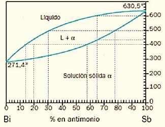
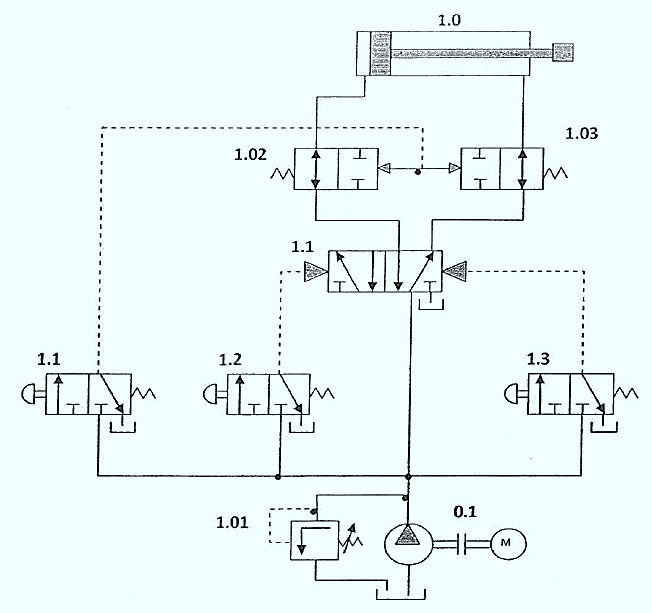

EBAU · Tecnología e Ingeniería II · Castilla y León · Modelo 2024
El alumno debe escoger cuatro preguntas de las ocho propuestas (90 minutos, cada pregunta 2,5 puntos). Aquí se resuelven todas para repasar. Selecciona un bloque o una pregunta en la barra lateral: cada una incluye el enunciado oficial, una introducción con los conceptos que se aplican y la solución paso a paso.
Bloque 1 · Materiales y fabricación
Ensayo de tracción (módulo de elasticidad, rotura) y diagrama de fases de una aleación.
Bloque 2 · Sistemas mecánicos
Viga con carga puntual, motor alternativo de 4 cilindros e instalación oleohidráulica.
Bloque 3 · Sistemas eléctricos y electrónicos
Circuito RLC en paralelo (impedancia, potencias) y diseño de una alarma con lógica digital.
Bloque 4 · Sistemas emergentes y control
IA y control en lazo abierto/cerrado; función de transferencia de un diagrama de bloques.
📄 Enunciado
Cuestión. Define ductilidad, fatiga, tenacidad y maleabilidad. (0,5 ptos.)
Problema. En la figura se muestra el diagrama de tracción del material de una barra de 400 mm de longitud y 25 mm² de sección.
- Comenta las características de la gráfica (intervalos y puntos significativos). (0,5 ptos.)
- Calcula el módulo de elasticidad del material (en GPa). (0,5 ptos.)
- Calcula la longitud de la barra (en mm) al aplicar en sus extremos una fuerza de 115 kN. (0,5 ptos.)
- Determina la fuerza (en kN) que produce la rotura del material. (0,5 ptos.)
💡 ¿Qué vamos a aplicar?
En la zona elástica se cumple la ley de Hooke: \(\sigma=E\,\varepsilon\), de donde el módulo de Young es \(E=\sigma/\varepsilon\) (pendiente de la recta inicial). La tensión es \(\sigma=F/S\) y el alargamiento en régimen elástico \(\Delta L=\varepsilon\,L_0=\dfrac{\sigma}{E}L_0\). La fuerza de rotura se obtiene con la tensión máxima del diagrama, \(F=\sigma\cdot S\).
Cuestión · definiciones
- Ductilidad: capacidad de un material para deformarse plásticamente (estirarse en hilos) antes de romper.
- Fatiga: rotura del material a tensiones inferiores a la de rotura cuando se somete a cargas variables y repetidas en el tiempo.
- Tenacidad: energía que absorbe un material antes de romperse (área bajo la curva σ–ε); combina resistencia y ductilidad.
- Maleabilidad: capacidad de deformarse plásticamente en láminas delgadas por compresión sin romperse.
a) Características de la gráfica
Tramo O–P: recta (zona elástica lineal, se cumple Hooke); P es el límite de proporcionalidad. P–E: zona elástica no lineal hasta el límite elástico E. En F aparece el escalón de fluencia (deformación sin apenas aumento de tensión). Después el material se endurece por deformación hasta la carga máxima R (σmáx = 260 MPa); a partir de R aparece la estricción y cae la tensión hasta la rotura.
b) Módulo de elasticidad
Se toma la pendiente de la recta elástica, con el punto P:
c) Longitud con F = 115 kN
Esta tensión (4600 MPa) es muy superior a la de rotura del material (260 MPa): con 115 kN la barra ya habría roto, por lo que el dato es incoherente (en el Modelo 0 oficial la fuerza es de 2 kN). Aplicando el método con un valor coherente, p. ej. 2 kN:
d) Fuerza de rotura
La tensión máxima soportada es la de R, σmáx = 260 MPa:
📄 Enunciado
Cuestión. ¿Qué diferencia existe entre una transformación eutectoide y una eutéctica? Define cada una de ellas. (0,5 ptos.)
Problema. A la vista del diagrama de equilibrio de fases simplificado de una aleación de bismuto y antimonio:
- Indica qué tipo de solubilidad tiene. (0,5 ptos.)
- Indica la temperatura de fusión de los metales puros bismuto y antimonio. (0,5 ptos.)
- Describe el proceso de enfriamiento desde los 700 °C hasta la temperatura ambiente de una aleación con un 65 % de antimonio e indica las temperaturas más significativas. (0,5 ptos.)
- Determina la proporción de las fases presentes a 400 °C en una aleación con un 80 % de bismuto. (0,5 ptos.)

💡 ¿Qué vamos a aplicar?
Es un diagrama isomorfo (dos líneas: liquidus arriba y solidus abajo, que encierran la lente bifásica L+α). Para las proporciones de fase se usa la regla de la palanca sobre la isoterma: la fracción de cada fase es proporcional al segmento opuesto.
Cuestión · eutéctica vs eutectoide
Ambas son transformaciones invariantes (a temperatura constante) en las que una fase se descompone en otras dos sólidas:
En la eutéctica lo que se transforma al enfriar es un líquido que solidifica dando dos sólidos; en la eutectoide lo que se transforma es un sólido (una fase sólida se descompone en otras dos sólidas).
a) Tipo de solubilidad
El diagrama tiene una única lente (liquidus y solidus) sin puntos eutécticos: los dos metales son totalmente solubles en estado líquido y sólido (solubilidad total → aleación isomorfa, forman la solución sólida α).
b) Temperaturas de fusión de los metales puros
Son los extremos de la lente: a 0 % Sb (bismuto puro, izquierda) y a 100 % Sb (antimonio puro, derecha).
c) Enfriamiento de la aleación con 65 % Sb desde 700 °C
- 700 °C: por encima del liquidus → todo líquido homogéneo.
- ≈ 545 °C (liquidus): empieza a solidificar; aparecen los primeros cristales de solución sólida α (más ricos en Sb que el líquido).
- 545 → 445 °C (zona L+α): coexisten líquido y α; al bajar T, crece la cantidad de sólido y el líquido se empobrece en Sb.
- ≈ 445 °C (solidus): solidifica la última gota de líquido → todo sólido α homogéneo (65 % Sb).
- 445 °C → ambiente: enfriamiento del sólido α sin cambios de fase.
(Temperaturas leídas sobre el diagrama; se admiten valores aproximados.)
d) Proporción de fases a 400 °C con 80 % Bi (= 20 % Sb)
A 400 °C y 20 % Sb el punto cae en la lente L+α. Leyendo los extremos de la isoterma: líquido con ≈ 10 % Sb y sólido α con ≈ 42 % Sb. Regla de la palanca (composición global C0=20 %):
📄 Enunciado
Cuestión. Explica las fuerzas y momentos que aparecen en las reacciones de un apoyo articulado móvil, un apoyo articulado fijo y un empotramiento. (0,75 ptos.)
Problema. De la viga que se muestra en la figura:
- Calcula las reacciones en los apoyos. (0,5 ptos.)
- Calcula los momentos flectores y esfuerzos cortantes. (0,75 ptos.)
- Representa los diagramas del momento flector y del esfuerzo cortante. (0,5 ptos.)
💡 ¿Qué vamos a aplicar?
La viga está en equilibrio: \(\sum F=0\) y \(\sum M=0\). Con un apoyo fijo (A) y uno móvil (B) hay dos reacciones verticales. El esfuerzo cortante V es la suma de fuerzas verticales a un lado de la sección; el momento flector M es la suma de momentos a un lado. El momento es máximo bajo la carga puntual.
Cuestión · tipos de apoyo
- Apoyo articulado móvil (rodillo): 1 reacción, perpendicular a la superficie de apoyo (una fuerza; permite giro y desplazamiento paralelo).
- Apoyo articulado fijo: 2 reacciones (una horizontal y una vertical); permite el giro pero impide todo desplazamiento. No transmite momento.
- Empotramiento: 3 reacciones (fuerza horizontal, fuerza vertical y un momento); impide giro y desplazamientos.
a) Reacciones
Tomando momentos en A (\(\sum M_A=0\)), con P a 1,5 m y B a 6 m:
b) Esfuerzos cortantes y momentos flectores
Cortante: tramo A–P (0 ≤ x < 1,5): V = +RA = 12 kN. Tramo P–B (1,5 < x ≤ 6): V = 12 − 16 = −4 kN.
Momento flector: en A, M = 0. Bajo la carga (x = 1,5 m):
En B, M = 0. El máximo es Mmáx = 18 kN·m bajo la carga.
c) Diagramas
📄 Enunciado
Cuestión. Dibuja el diagrama p–v de un ciclo de Carnot y explica cada una de sus transformaciones. (1 pto.)
Problema. Un motor alternativo de 4 cilindros genera un par máximo de Mmáx = 300 N·m cuando gira a n = 3750 rpm. El diámetro de cada cilindro es 80 mm, la carrera 92 mm y el volumen de la cámara de combustión de cada cilindro 58,5 cm³. Determina:
- La cilindrada total del motor. (0,5 ptos.)
- La potencia desarrollada operando en par máximo. (0,5 ptos.)
- La relación volumétrica de compresión. (0,5 ptos.)
💡 ¿Qué vamos a aplicar?
La cilindrada unitaria es el volumen desplazado por el pistón, \(V_u=\frac{\pi D^2}{4}\cdot S\); la total, \(V_T=z\,V_u\). La potencia a partir del par es \(P=M\cdot\omega\) con \(\omega=\frac{2\pi n}{60}\). La relación de compresión es \(r_c=\dfrac{V_u+V_c}{V_c}\).
Cuestión · ciclo de Carnot (p–v)
El ciclo de Carnot consta de cuatro transformaciones reversibles entre dos focos:
- 1→2 Expansión isoterma (a Tcaliente): el gas se expande absorbiendo calor Q1; p·v = cte.
- 2→3 Expansión adiabática: sigue expandiéndose sin intercambio de calor; la T baja hasta Tfría.
- 3→4 Compresión isoterma (a Tfría): se comprime cediendo calor Q2.
- 4→1 Compresión adiabática: se comprime sin calor; la T sube hasta Tcaliente.
En el diagrama p–v son dos hipérbolas isotermas (más tendidas) y dos adiabáticas (más verticales) que cierran el ciclo; el área encerrada es el trabajo neto. Rendimiento \(\eta=1-\dfrac{T_2}{T_1}\).
a) Cilindrada total
b) Potencia en par máximo
c) Relación de compresión
📄 Enunciado
Cuestión. Indica cuáles son los elementos de la unidad de mantenimiento, explicando la función de cada uno, y dibuja su símbolo. (0,75 ptos.)
Problema. En la instalación oleohidráulica de la figura, explica:
- Define cada componente numerado. (0,75 ptos.)
- La misión de los pulsadores manuales. (0,5 ptos.)
- ¿Cuál es la primera operación que tiene lugar al arrancar la bomba? (0,5 ptos.)

💡 ¿Qué vamos a aplicar?
La unidad de mantenimiento acondiciona el aire comprimido antes de usarlo. En una instalación oleohidráulica se identifican el grupo de presión (bomba + motor + limitadora), el distribuidor que gobierna el cilindro y los elementos de mando (pulsadores/válvulas 3/2) y de regulación.
Cuestión · unidad de mantenimiento
Prepara el aire comprimido y consta de tres elementos (símbolo: los tres dentro de un recuadro de trazos):
- Filtro con purga: retiene impurezas y separa el agua condensada.
- Regulador de presión con manómetro: mantiene constante la presión de trabajo.
- Lubricador: añade una fina niebla de aceite para lubricar los elementos neumáticos.
a) Componentes numerados
- 1.0 — Cilindro hidráulico de doble efecto (actuador).
- 1.1 (central) — Válvula distribuidora 4/3 con pilotaje: dirige el aceite a una u otra cámara del cilindro (avance/retroceso/centro).
- 1.02 y 1.03 — Válvulas reguladoras de caudal unidireccionales (con antirretorno) en las líneas del cilindro: regulan la velocidad de avance y retroceso.
- 1.1, 1.2, 1.3 (inferiores) — Válvulas 3/2 accionadas por pulsador manual y retorno por muelle (mando).
- 1.01 — Válvula limitadora de presión (seguridad): descarga a tanque si se supera la presión máxima.
- 0.1 — Grupo de accionamiento: bomba hidráulica movida por el motor eléctrico M.
b) Misión de los pulsadores manuales
Son los elementos de mando: al accionarlos envían la señal de pilotaje que conmuta el distribuidor 1.1, ordenando el avance o el retroceso del cilindro. Al soltarlos, el muelle los devuelve a reposo.
c) Primera operación al arrancar la bomba
Al arrancar, mientras no se acciona ningún pulsador el distribuidor está en posición de reposo y el aceite no puede mover el cilindro; la bomba impulsa caudal y, al no haber consumo, la válvula limitadora de presión (1.01) abre y devuelve el aceite al tanque. Es decir, la primera operación es la descarga del caudal a tanque a través de la limitadora hasta que se da una orden de maniobra.
📄 Enunciado
Cuestión. Explica la diferencia entre el valor instantáneo, el valor máximo y el valor eficaz de una señal. (0,5 ptos.)
Problema. En el circuito de corriente alterna de la figura (220 V, 50 Hz), con R = 15 Ω, XL = 45j Ω y XC = −15j Ω en paralelo, determina:
- La impedancia total. (0,5 ptos.)
- La intensidad total y por cada componente. (0,5 ptos.)
- Las potencias activa, reactiva y aparente. (0,5 ptos.)
- Dibuja el triángulo de potencias. (0,5 ptos.)
💡 ¿Qué vamos a aplicar?
En paralelo se suman las admitancias: \(Y=\frac1R+\frac1{jX_L}+\frac1{-jX_C}\). La impedancia es \(Z=1/|Y|\) y la intensidad total \(I=V\,|Y|\). Cada rama: \(I=V/Z_{rama}\). Potencias: \(P=V^2/R\), \(Q=V^2/X_L-V^2/X_C\), \(S=V\,I=\sqrt{P^2+Q^2}\).
Cuestión · valor instantáneo, máximo y eficaz
- Instantáneo (v, i): valor de la señal en cada instante, \(v(t)=V_{\max}\sin(\omega t)\).
- Máximo (Vmáx o amplitud): valor de pico que alcanza la señal.
- Eficaz (Vef): valor de continua que produciría el mismo efecto térmico; para una senoidal \(V_{ef}=V_{\max}/\sqrt2\). Los aparatos miden el eficaz (los 220 V son eficaces).
a) Impedancia total
Admitancias de cada rama: \(Y_R=1/15=0{,}0667\ \mathrm S\); \(Y_L=1/(45j)=-0{,}0222j\ \mathrm S\); \(Y_C=1/(-15j)=+0{,}0667j\ \mathrm S\).
b) Intensidades
c) Potencias
d) Triángulo de potencias
📄 Enunciado
Cuestión. Representa la tabla de verdad de un sumador. (0,5 ptos.)
Problema. Se desea diseñar el control digital de la alarma de evacuación de una planta. Hay tres sensores: incendio (A), humedad (B) y presión (C). La alarma se activa cuando hay riesgo de incendio (A) o cuando se superan conjuntamente los niveles de presión y humedad (B y C).
- Obtén la tabla de verdad y la función lógica. (0,75 ptos.)
- Simplifica con el mapa de Karnaugh. (0,75 ptos.)
- Implementa la función con puertas NAND de dos entradas. (0,5 ptos.)
💡 ¿Qué vamos a aplicar?
Traducimos el enunciado a lógica: la alarma F se activa si A, o si B y C simultáneamente: \(F=A+B\cdot C\). Con el mapa de Karnaugh se comprueba que ya es mínima. Para NAND se aplica doble negación y De Morgan.
Cuestión · tabla de verdad del semisumador
Suma de dos bits A, B → salidas S (suma) y C (acarreo): \(S=A\oplus B\), \(C=A\cdot B\).
| A | B | S | Cout |
|---|---|---|---|
| 0 | 0 | 0 | 0 |
| 0 | 1 | 1 | 0 |
| 1 | 0 | 1 | 0 |
| 1 | 1 | 0 | 1 |
a) Tabla de verdad y función lógica
| A | B | C | F |
|---|---|---|---|
| 0 | 0 | 0 | 0 |
| 0 | 0 | 1 | 0 |
| 0 | 1 | 0 | 0 |
| 0 | 1 | 1 | 1 |
| 1 | 0 | 0 | 1 |
| 1 | 0 | 1 | 1 |
| 1 | 1 | 0 | 1 |
| 1 | 1 | 1 | 1 |
b) Simplificación por Karnaugh
Los unos agrupan un bloque de cuatro (toda la fila A = 1) → término A, y un bloque de dos (B = C = 1) → término B·C. La función mínima es:
c) Implementación con NAND de dos entradas
Aplicando doble negación: \(F=A+BC=\overline{\overline{A}\cdot\overline{BC}}\).
Con NAND: \(\overline A=\mathrm{NAND}(A,A)\) y \(\overline{BC}=\mathrm{NAND}(B,C)\). Por tanto:
📄 Enunciado
Cuestiones.
- Explica alguna aplicación de la inteligencia artificial que conozcas. (0,5 ptos.)
- Ventajas e inconvenientes de un sistema de control de lazo cerrado frente a uno abierto. (0,5 ptos.)
Problema. Calcula la función de transferencia C/E del sistema de control cuyo diagrama de bloques se muestra en la figura. (1,5 ptos.)
💡 ¿Qué vamos a aplicar?
Se simplifica el diagrama por reglas de bloques: las ramas en paralelo se suman (G1G2 + G3) y el lazo con realimentación negativa da \(\dfrac{G}{1+G\,H}\).
a) Aplicación de la IA
Ejemplos: asistentes de voz y traductores (procesamiento del lenguaje natural), visión artificial para diagnóstico médico o conducción autónoma, sistemas de recomendación, detección de fraude o mantenimiento predictivo en la industria. Todos aprenden de datos para tomar decisiones o hacer predicciones.
b) Lazo cerrado frente a lazo abierto
Ventajas del lazo cerrado: mide la salida (realimentación) y corrige errores y perturbaciones, es más preciso y estable frente a cambios. Inconvenientes: es más complejo y caro (necesita sensores y comparador) y puede volverse inestable si está mal diseñado. El lazo abierto es simple y barato pero no corrige errores.
Problema · función de transferencia C/E
Sea X la salida del primer sumador: \(X=E-H_1\,C\). Las dos vías directas (G1G2 y G3) parten del mismo punto y se suman en el segundo sumador: